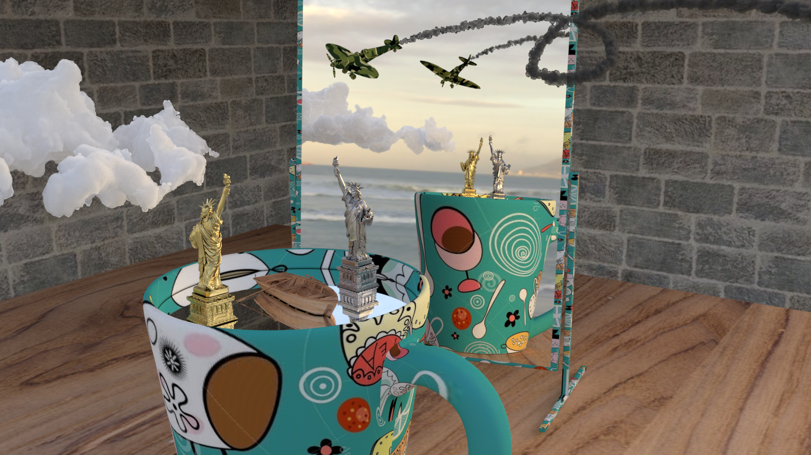

Monte Carlo rendering
Implemented physically-based light transport using a modular object-oriented C++ architecture.
EPFL · Advanced Computer Graphics
A physically-based renderer developed using object-oriented design and Monte Carlo path tracing, with implementations statistically validated against Mitsuba 3.

Final scene created in Blender and rendered using the implemented C++ renderer.
Implemented physically-based light transport using a modular object-oriented C++ architecture.
Added texture mapping, rough material models, image-based lighting, and homogeneous participating media.
Compared results against Mitsuba 3 using reference renders, difference images, and statistical tests.
Read the complete implementation details, validation experiments, and rendering comparisons.